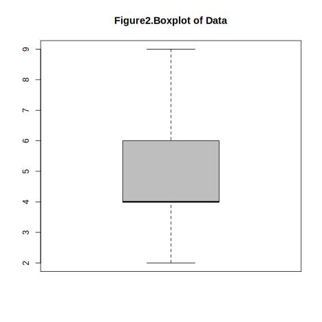
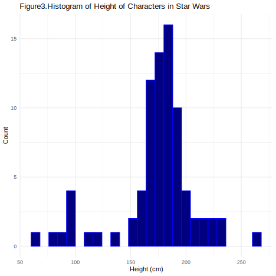
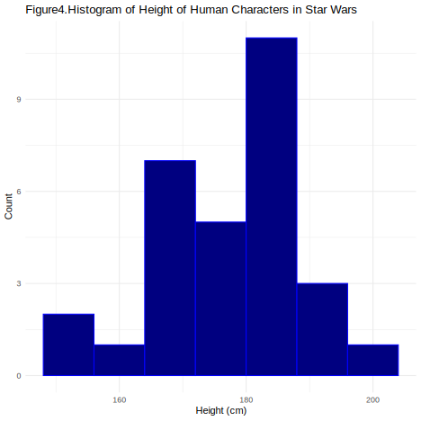

The Importance of Summary Statistics and Techniques for Creating Them in R
Jelin George (Matriculation: 400826617)
International Management, M.A., Hochschule Fresenius - University of Applied Science
Author Note
The authors have no conflicts of interest to disclose.
Correspondence concerning this article should be addressed to Jelin George (Matriculation: 400826617), International Management, M.A., Hochschule Fresenius - University of Applied Science, Email: george.jelin@stud-hs.fresenius.de
Abstract
This document presents a concise overview of summary statistics and their importance in R. Summary statistics - such as mean, median, standard deviation, and frequency counts - capture the key features of a dataset, enabling quick exploration and interpretation. R provides powerful functions and visualization tools to efficiently compute and present these statistics, making them essential for simplifying data, identifying patterns, and supporting informed analysis and decision-making.
Keywords: summary statistics, R programming, data analysis, data visualisation, data summarisation
The Importance of Summary Statistics and Techniques for Creating Them in R
Summary statistics are concise numerical measures that capture the essential characteristics of a dataset. They serve as foundational tools in data analysis, providing concise descriptions of large datasets. They help analysts and researchers understand the central tendencies, variability, and overall distribution of data, making complex datasets interpretable and actionable. Without summary statistics, raw data would be overwhelming and difficult to interpret, making it challenging to draw meaningful conclusions or communicate findings effectively.
In R, summary statistics are foundational for data analysis, enabling users to efficiently condense complex data into interpretable values like the mean, median, mode, standard deviation, and quantiles. These statistics provide a snapshot of the data, facilitating initial exploration, quality checks, and communication of results.
In this document, we will:
Define summary statistics and their importance
Explore key measures and techniques
Demonstrate practical application with code
Discuss best practices and common pitfalls
What is Summary Statistics?
Summary statistics are numerical values that describe the main features of a dataset, such as its center and spread. They simplify complex data into easily interpretable numbers, offering quick insights into trends and variability, and serve as a foundation for further analysis. These statistics provide a snapshot of the data, facilitating initial exploration, quality checks, and communication of results.
R offers a rich ecosystem of functions and packages - such as summary(), dplyr::summarise(), and visualization tools like histograms and boxplots - that streamline the computation and presentation of summary statistics for both numeric and categorical data. Their importance lies in simplifying large datasets, revealing patterns and outliers, and laying the groundwork for deeper statistical analyses and informed decision-making.
As the first and often most critical step in any analytical workflow, summary statistics in R empower analysts and researchers to understand, compare, and communicate data-driven insights with clarity and precision.
Summary statistics can be typically divided into:
Descriptive statistics: Summarize the main features of a dataset (e.g., mean, median, mode). This will be our focus here.
Inferential statistics: Make predictions or inferences about a population based on a sample (not the focus here).
I would like to highlight a book, Making sense of statistics: A conceptual overview, (Oh & Pyrczak, 2023) which offers a clear and accessible introduction to key statistical concepts for beginners. The book focuses on building conceptual understanding of both descriptive and inferential statistics, using simple explanations, practical examples, and step-by-step guidance. It is designed to help students from any discipline gain confidence in applying statistics to research and interpreting data effectively.
Watch this tutorial video on descriptive statistics in R to get you started.
Key Measures in Summary Statistics
Measures of Central Tendency
Central tendency measures indicate where most values in a dataset fall.
Mean: The arithmetic average. Add up all the values, then divide by how many there are to get the average of all the numbers.
Median: The middle value when data is ordered. If there’s an even number, it’s the average of the two middle numbers.
Mode: The most frequently occurring value.
# Example in R#| echo: true#| label: mean-median-modedata <-c(2, 4, 4, 4, 5, 7, 9)mean(data) # Arithmetic mean
Note. Comparison of two distributions with different dispersion. The taller, narrower curve has less dispersion (lower variance), while the shorter, wider curve has more dispersion (higher variance).
Range: Difference between max and min values.
Variance: Average squared deviation from the mean.
Standard Deviation: Square root of variance.
Interquartile Range (IQR): Range between the 25th and 75th percentiles.
Coefficient of Variation: Standard deviation divided by the mean.
range(data)
[1] 2 9
var(data)
[1] 5.333333
sd(data)
[1] 2.309401
IQR(data)
[1] 2
sd(data)/mean(data) # Coefficient of Variation
[1] 0.4618802
Measures of Shape and Distribution
Describe the overall pattern and characteristics of how data values are distributed within a dataset.
Skewness: Measures asymmetry of the distribution.
Kurtosis: Measures “tailedness” or peakedness of the distribution.
library(e1071)skewness(data)
[1] 0.4871393
kurtosis(data)
[1] -1.212054
Visualization tools to help understand distribution of data better.
Histogram: It displays how data values are distributed across different intervals in patterns like bell-shaped (normal), J-shaped, or skewed distributions, as well as spot outliers and the overall spread of the data.
# This histogram shows the distribution in the example we set previously.#| label: fig-histogram#| fig-cap: "Histogram of the data"hist(data, main="Figure1.Histogram of Data", col ="grey")
As seen above, the distribution is centered around 4.
Boxplot: A graphical tool that visually summarizes the distribution, central tendency, spread, and skewness of numerical data using the five-number summary: minimum, first quartile (Q1), median, third quartile (Q3), and maximum.
boxplot(data, main="Figure2.Boxplot of Data", col="grey")

Handling Missing Data
Missing data can bias summary statistics if not handled properly.
Types of missing data: MCAR (Missing Completely at Random), MAR (Missing at Random), MNAR (Missing Not at Random).
Techniques: Omit missing values, impute with mean/median/mode, or use advanced imputation.
Frequency table: A tool used to organize and display how often each value or category occurs in a dataset. It typically consists of two or more columns: one listing all possible values or categories, and another showing the frequency (count) of each making it easier to see which values are common or rare, summarize large sets of data, and identify patterns.
Relative frequency: Proportion of each category.
Cumulative frequency: Running total of frequencies.
# To create a frequency table category <-c('A', 'B', 'A', 'C', 'B', 'A')table(category)
category
A B C
3 2 1
# To calculate the proportion of each unique value in the vector categoryprop.table(table(category)) |>round(digits =2)
category
A B C
0.50 0.33 0.17
# To calculate the total of frequenciescategory <-c('A', 'B', 'A', 'C', 'B', 'A')cumulative_freq <-cumsum(table(category))cumulative_freq
A B C
3 5 6
Cross-tabulations (contingency tables): Used in statistics to examine and summarise the relationship between two or more categorical variables. In a cross-tabulation, one variable’s categories are arranged in the rows and another variable’s categories in the columns, with each cell showing the frequency (count) of observations that fall into the corresponding combination of categories.
gender
category F M
A 0.167 0.333
B 0.333 0.000
C 0.000 0.167
Summarizing Data Frames
We can create comprehensive summaries for entire datasets by summarizing data frames. This involves generating clear overviews of each variable and its values, typically by calculating summary statistics such as the mean, median, minimum, maximum, standard deviation, and counts. These summaries help reveal the structure, trends, and important features of the data.
Let’s explore a basic example using the summary() function.
We can use the above dplyr::glimpse(df) for a quick structure overview, or summary(df) for base R summaries, but skimr gives the most detailed tidy summary. You can further explore skimr here.
Furthermore, read Modern Statistics with R to understand essential tools and techniques in contemporary statistical data analysis, using the R programming language. The book features numerous examples and over 200 exercises with worked solutions. The online version is freely available and regularly updated, with downloadable datasets for hands-on learning
The YouTube videos referenced here may assist in understanding the code chunks presented above. (Walker, 2023)(Videos, 2024)
Practical Application
Let us begin with a few fun exercises to understand how to read data and apply summary statistics functions using the Star Wars dataset.
Before we get started, we must install essential packages that might be needed later.
if (!require(pacman)) install.packages("pacman")
Loading required package: pacman
pacman::p_load(tidyverse)
Next, load the Star Wars dataset available online in the dylyr package. (Wickham et al., 2023)
library(dplyr)data(starwars)
Let’s now streamline the dataset to include only the essential variables before applying the summary functions.
library(knitr)library(kableExtra)kable(head(starwars, 10), format ="latex", booktabs =TRUE) %>%kable_styling(latex_options ="striped", full_width =FALSE)
# Mean heightstarwars %>%summarise(mean_height =mean(height, na.rm =TRUE))
# A tibble: 1 × 1
mean_height
<dbl>
1 175.
# Median heightstarwars %>%summarise(median_height =median(height, na.rm =TRUE))
# A tibble: 1 × 1
median_height
<int>
1 180
# Mode heightget_mode <-function(x) {# Get unique values in x ux <-unique(x) # Find the value with the highest frequency ux[which.max(tabulate(match(x, ux)))] }starwars %>%summarise(mode_height =get_mode(height[!is.na(height)]))
# A tibble: 1 × 1
mode_height
<int>
1 183
Now, let’s apply various summary functions.
# Select relevant variablesstarwars_selected <- starwars %>%select(height, mass, gender, birth_year, species)# Base R summary for numeric variablessummary(starwars_selected %>%select(height, mass))
height mass
Min. : 66.0 Min. : 15.00
1st Qu.:167.0 1st Qu.: 55.60
Median :180.0 Median : 79.00
Mean :174.6 Mean : 97.31
3rd Qu.:191.0 3rd Qu.: 84.50
Max. :264.0 Max. :1358.00
NA's :6 NA's :28
# Frequency table for gendertable(starwars_selected$gender)
feminine masculine
17 66
# Proportion table for genderprop.table(table(starwars_selected$gender))
feminine masculine
0.2048193 0.7951807
# Comprehensive summary using skimrskim(starwars_selected)
Data summary
Name
starwars_selected
Number of rows
87
Number of columns
5
_______________________
Column type frequency:
character
2
numeric
3
________________________
Group variables
None
Variable type: character
skim_variable
n_missing
complete_rate
min
max
empty
n_unique
whitespace
gender
4
0.95
8
9
0
2
0
species
4
0.95
3
14
0
37
0
Variable type: numeric
skim_variable
n_missing
complete_rate
mean
sd
p0
p25
p50
p75
p100
hist
height
6
0.93
174.60
34.77
66
167.0
180
191.0
264
▂▁▇▅▁
mass
28
0.68
97.31
169.46
15
55.6
79
84.5
1358
▇▁▁▁▁
birth_year
44
0.49
87.57
154.69
8
35.0
52
72.0
896
▇▁▁▁▁
Let’s look at a visual pattern of the height of different characters in Star Wars.
library(dplyr)library(ggplot2)starwars %>%ggplot(aes(x = height)) +geom_histogram(binwidth =8, fill ="navy", color ="blue") +labs(title ="Figure3.Histogram of Height of Characters in Star Wars",x ="Height (cm)",y ="Count" ) +theme_minimal()
Warning: Removed 6 rows containing non-finite outside the scale range
(`stat_bin()`).

Now, we filter the species to get visual pattern of the height of different human characters in Star Wars.
starwars %>%filter(species =="Human") %>%ggplot(aes(x = height)) +geom_histogram(binwidth =8, fill ="navy", color ="blue") +labs(title ="Figure4.Histogram of Height of Human Characters in Star Wars",x ="Height (cm)",y ="Count" ) +theme_minimal()
Warning: Removed 5 rows containing non-finite outside the scale range
(`stat_bin()`).

Furthermore, this YouTube video Return of the Star Wars dataset might be an interesting watch to understanding the dataset better.
Limitations
Summary statistics are essential for providing a quick and accessible overview of a dataset, but they have several important limitations. In the book Naked Statistics, the author Charles Wheelan highlights key limitations of statistics, warning that statistical measures can be easily misapplied, misinterpreted, or manipulated to mislead people. He explains that while statistics help summarize complex data, this simplification can lead to information loss and oversights, especially when descriptive statistics are mistaken for complete truth. He emphasizes that statistics are only as reliable as the data and methods behind them, and that issues like bias, poor sampling, or careless analysis can produce misleading or false conclusions. (Wheelan, 2013)
Let’s look at some of the limitations in detail:
No Causality or Explanation: Summary statistics describe what is present in the data but cannot explain why patterns exist or establish causal relationships. For example, knowing the average test score does not reveal the factors that influenced those scores.
Limited to the Sample: These statistics only summarize the data actually measured and cannot be generalized to a broader population without further inferential analysis. They do not account for sampling variability or external validity.
No Predictive Power: Summary statistics cannot be used to make predictions about future observations or unmeasured data; they are purely descriptive.
Loss of Detail and Nuance: By condensing complex data into single values (like the mean or median), summary statistics can obscure important patterns, subgroups, or variability within the data. For instance, two datasets with the same mean can have very different distributions.
Potential for Misleading Conclusions: Relying solely on summary statistics can mask underlying issues such as data bias, or important subgroup differences, leading to incomplete interpretations.
No Insight into Relationships: Summary statistics typically focus on individual variables and do not reveal relationships or associations between multiple variables.
In summary, while summary statistics are valuable for initial data exploration, they should be complemented with more detailed analyses and visualizations to avoid oversimplification and misinterpretation of the data.
The future direction of summary statistics is being shaped by advances in data complexity, computational power, and the integration of artificial intelligence.Several key trends and directions can be identified:
Integration with Advanced Computational Methods: As datasets grow larger and more complex, summary statistics will increasingly be complemented by computationally intensive methods such as bootstrapping, simulation-based inference, and machine learning. These approaches allow for more robust and nuanced summaries, especially in high-dimensional or unstructured data settings. (Garden, 2023)
AI-Driven and Automated Summarization: Artificial intelligence, including machine learning and natural language processing, is transforming how summary statistics are generated and interpreted. AI-driven summarization tools can quickly distill massive and complex datasets into actionable insights, improving efficiency, accessibility, and consistency. Future developments are expected to include real-time, personalized, and multimodal summarization, making summary statistics more dynamic and tailored to user needs. (Datatas, 2025)
Enhanced Visualization and Exploratory Data Analysis: The role of visualization in summary statistics will continue to grow, leveraging advances in computer graphics and interactive tools. This enables more intuitive and exploratory ways to understand data distributions, trends, and anomalies, moving beyond traditional tables and static plots. (Potter et al., 2010)
Addressing Big Data and Complex Structures: Summary statistics will need to adapt to the challenges of big data, including handling massive volumes, varied data types, and complex dependencies (such as networks or time-evolving data). This will require new conceptual frameworks and algorithms capable of summarizing information efficiently at scale.(Fan et al., 2014)
Ongoing Methodological Innovation: The field will continue to see progress in robust inference, regularization, causal inference, and adaptive decision analysis, all of which will influence how summary statistics are computed and applied in practice. (Gelman & Vehtari, 2024)
In summary, the future of summary statistics lies in their evolution from simple descriptive tools to components of sophisticated, automated, and interactive analytical systems. They will play a foundational role in making sense of big, complex, and heterogeneous data, driven by advances in computation, AI, and interdisciplinary collaboration.
Conclusion
Summary statistics are fundamental to any data analysis process, serving as the essential first step in understanding and interpreting datasets. In R, summary statistics provide a concise overview of data distributions, central tendencies, and variability, enabling analysts to quickly assess data quality, detect anomalies, and guide subsequent analytical decisions. The flexibility and power of R-through core functions like summary(), mean(), sd(), and packages such as dplyr, to efficiently compute and customize statistical summaries for both ungrouped and grouped data.
According to (Lane, 2013), using R’s tools to automate calculations of summary statistics-such as mean, median, standard deviation, range, and percentiles-enables users to efficiently produce both overall and group-wise summaries. This not only streamlines exploratory data analysis but also establishes a strong basis for advanced statistical modeling and hypothesis testing. As Lane emphasizes, mastering summary statistics in R allows analysts to extract meaningful insights, make better decisions, and clearly communicate results across various fields of research and business analytics.
Wienclaw, R. A. (2009). The misuse of statistics. The Research Starters Sociology, 1–5.
Affadative
I hereby affirm that this submitted paper was authored unaided and solely by me. Additionally, no other sources than those in the reference list were used. Parts of this paper, including tables and figures, that have been taken either verbatim or analogously from other works have in each case been properly cited with regard to their origin and authorship. This paper either in parts or in its entirety, be it in the same or similar form, has not been submitted to any other examination board and has not been published.
I acknowledge that the university may use plagiarism detection software to check my thesis. I agree to cooperate with any investigation of suspected plagiarism and to provide any additional information or evidence requested by the university.